1982-1984
De geboorte van X
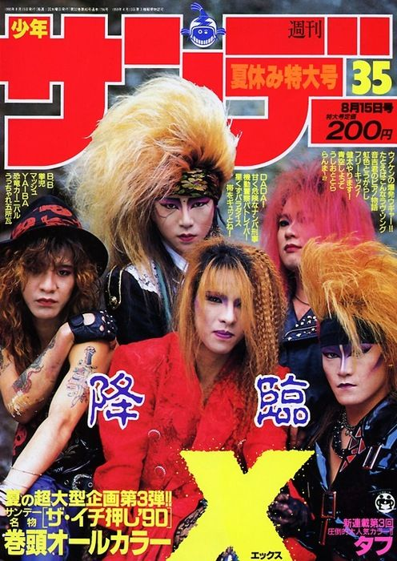
Yoshiki en Toshi leggen de basis voor wat we nu kennen als Visual Kei. Als de absolute aartsvaders van de beweging, gaf X JAPAN (opgericht in 1982) de stroming haar naam met hun legendarische slogan "Psychedelic Violence Crime of Visual Shock". Bij hun nationale doorbraak rond 1989 zetten zij de standaard voor de vroege 'Visual Shock'-esthetiek: gigantische, kaarsrecht omhoog getoupeerde kapsels in felle kleuren, gecombineerd met leer, spikes, korsetten en Victoriaanse kanten overhemden.
1987
Buck-Tick
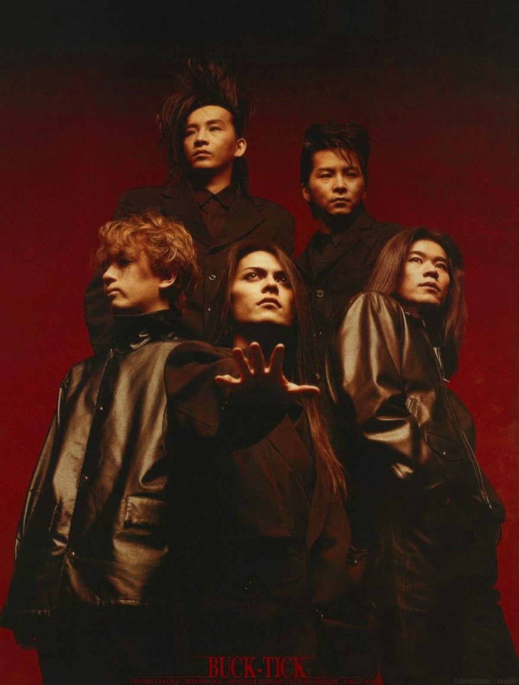
Hoewel X Japan de agressie bracht, was BUCK-TICK de band die de visuele blauwdruk voor de "coole" en "mysterieuze" kant van Visual Kei perfectioneerde. Met hun debuut bij een major label in 1987 schokten ze Japan met hun metershoge, getoupeerde kapsels die kaarsrecht omhoog stonden. Vooral zanger Atsushi Sakurai werd een iconisch figuur; zijn androgyne schoonheid, diepe baritonstem en neiging naar gothic en post-punk mode zorgden ervoor dat de scene niet alleen om lawaai draaide, maar ook om duistere sensualiteit en artistieke verfijning.
1990-1991
De Soft Visual Opkomst
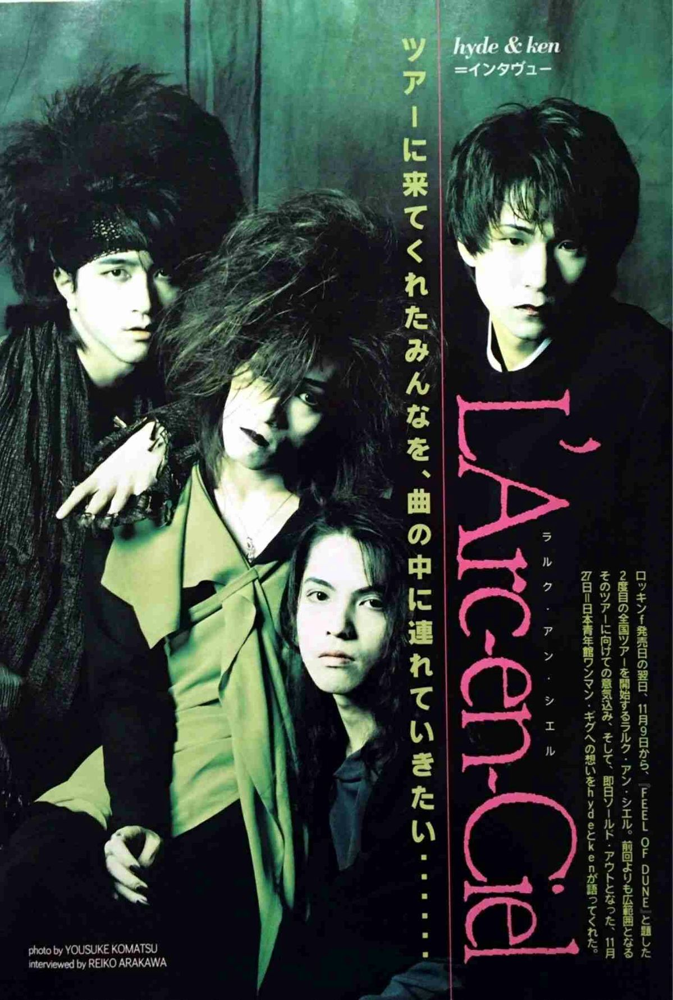
erwijl de kern van de scene steeds extremer werd, ontstond er in de vroege jaren '90 een tegenbeweging die bekend staat als Soft Visual. Deze stijl behield de artistieke focus en de gestileerde kapsels, maar verving de spikes en bondage door een meer modieuze, "cleane" en toegankelijke esthetiek. Bands als GLAY en L'Arc-en-Ciel waren de drijvende krachten achter deze stroming. Zij combineerden de visuele flair van de underground met een uiterlijk dat niet zou misstaan in een high-fashion magazine: denk aan stijlvolle colberts, subtielere make-up en elegant geknipt haar in plaats van metershoge hanenkammen.
1992
Nagoya-kei
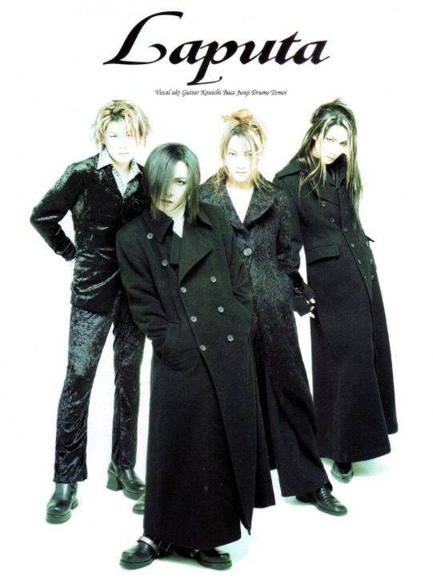
Terwijl Tokyo zich richtte op glitter en theater, ontstond in de stad Nagoya rond 1992 een rauwer en duisterder tegenwicht: Nagoya-kei. Bands zoals Silver-Rose en later Rouage en Laputa lieten de felle kleuren en vrolijkheid vallen voor een esthetiek die geworteld was in de sombere punk en Britse gothic rock. De mode was minder "verkleed" en meer gericht op een intimiderende, melancholische uitstraling: veel zwart leer, zware zilveren kettingen, verward zwart haar en een focus op een onheilspellende sfeer. Deze stroming legde de basis voor de hardere, meer emotionele kant van Visual Kei en bewees dat de subcultuur ook buiten de hoofdstad een eigen, unieke visuele identiteit kon ontwikkelen.
1993
Gotiek invloed van Luna Sea
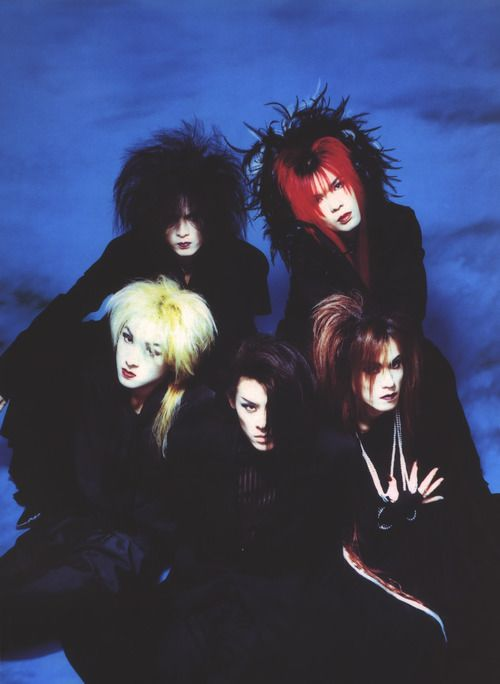
Waar andere bands kozen voor kleur en shock, bracht LUNA SEA rond 1993 de "Gothic" verfijning naar de absolute top van de Japanse hitlijsten. Hun invloed verschoof de focus van wilde punk naar een volwassen, mysterieuze esthetiek die volledig draaide om de kleur zwart. De leden cultiveerden een aura van intellectuele duisternis en melancholie, met strakke lederen broeken, lange fluwelen jassen en zwaar aangezette eyeliner. Vooral gitarist Sugizo werd een stijlicoon door zijn mix van barokke elegantie en futuristische details.
1995
De Franse Barok
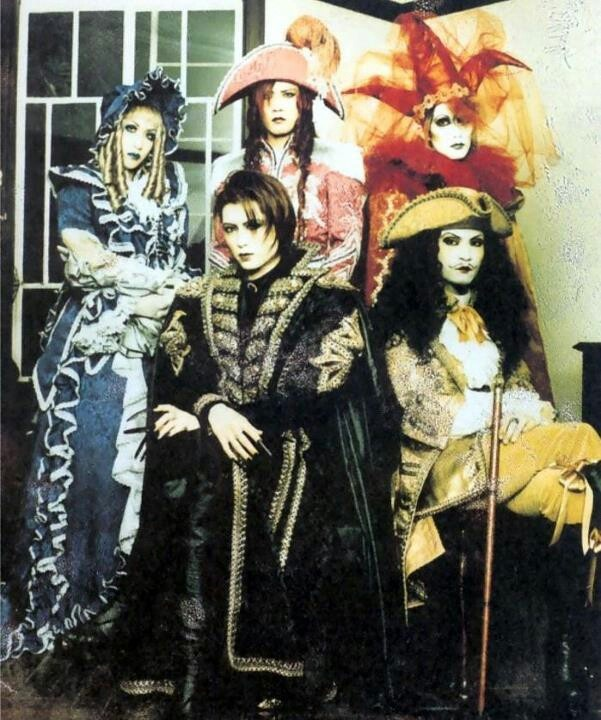
Met de komst van zanger Gackt in 1995 transformeerde MALICE MIZER Visual Kei van een muziekscene naar een levend historisch theater. Onder de artistieke leiding van gitarist Mana werd de barokke en rococo-esthetiek de absolute standaard. De band verving de standaard rockoutfits door gigantische baljurken, korsetten, kanten sluiers en pruiken die rechtstreeks uit het 18e-eeuwse Frankrijk leken te komen. Elk lid belichaamde een specifiek karakter, zoals de pierrot of de aristocraat, waardoor de grens tussen muzikant en acteur vervaagde. Hun invloed was gigantisch: ze legden niet alleen de basis voor de Gothic Lolita-mode, maar bewezen ook dat een band een compleet eigen universum kon creëren waarin mode en decor net zo belangrijk waren als de muziek zelf.
1996
Tanbi-kei
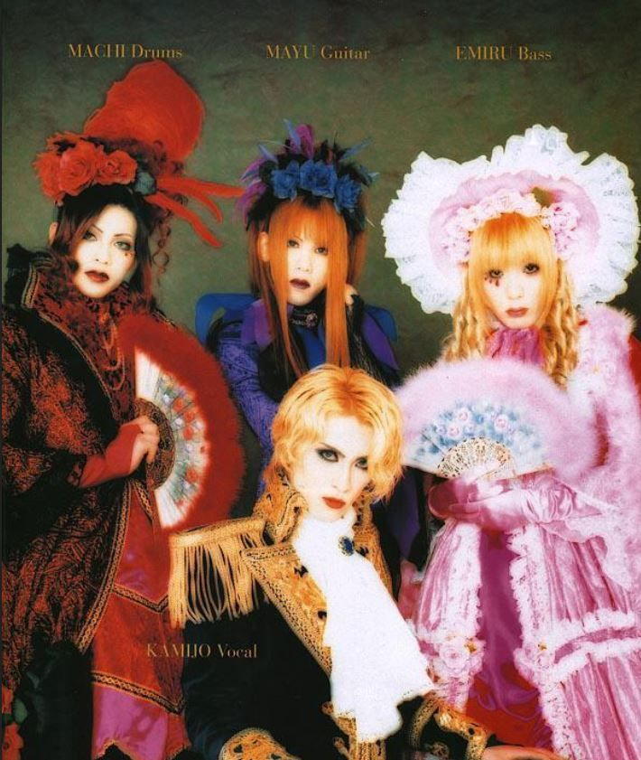
Rond 1996 werd de substroming Tanbi-kei (esthetiek van de pure schoonheid) populair, met de band LAREINE als het absolute boegbeeld. Onder leiding van de charismatische zanger Kamijo perfectioneerde de band een look die draaide om romantiek, bloemen (vooral rozen) en de sfeer van de Franse aristocratie. Waar Malice Mizer soms duister en griezelig kon zijn, focuste LAREINE zich volledig op het sprookjesachtige en het "prinselijke". Hun invloed zorgde voor een enorme opmars van witte zijde, gelaagde kanten jabots en prachtig gestileerde, vaak blonde krullen. LAREINE bewees dat Visual Kei ook zacht, dromerig en uiterst vrouwelijk kon zijn, wat een enorme impact had op de latere "Sweet" kant van de Lolita-mode en de romantische vertakkingen binnen de scene.
1997-1998
Het einde van een tijdperk en tragisch verlies
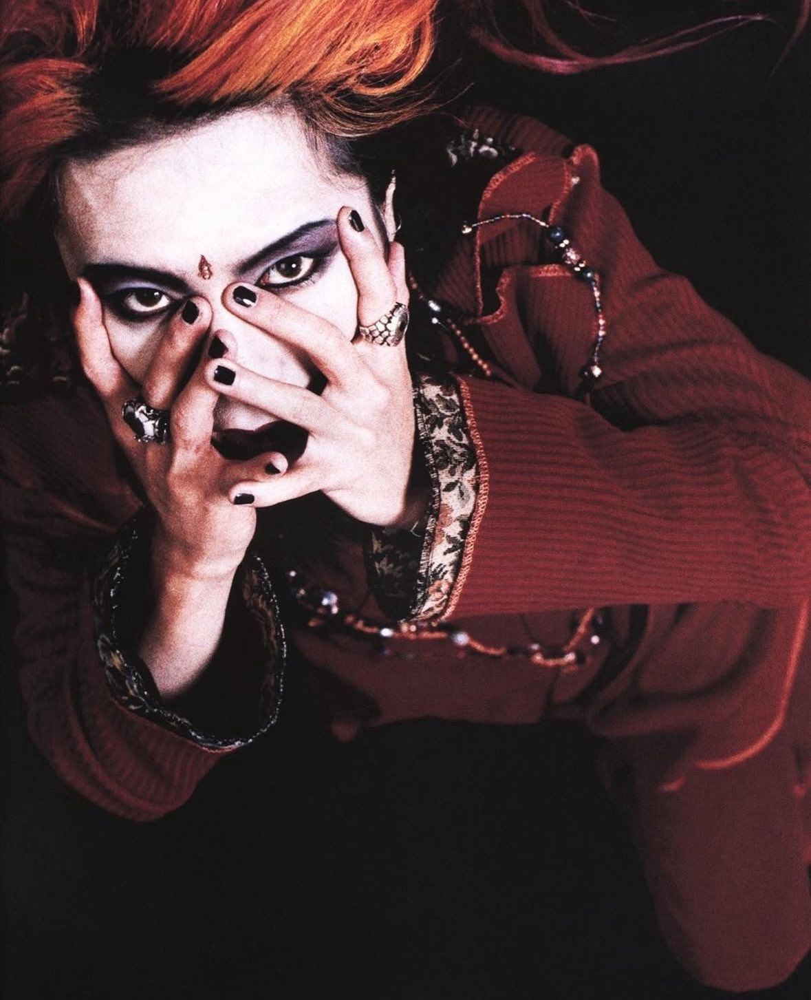
Het jaar 1997 markeerde het einde van de gouden eeuw van de eerste generatie. X Japan ging onverwacht uit elkaar na het vertrek van zanger Toshi, wat een schokgolf door de achterban teweegbracht. Het drama werd nog groter toen de iconische gitarist van de band, hide, in 1998 plotseling overleed. Zijn begrafenis trok bijna 50.000 fans en legde het openbare leven in Tokio plat. Dit verlies luidde een tijdelijke neergang van de mainstream populariteit van het genre in.
2000
De geboorte van de 'Angura Kei' tegenbeweging
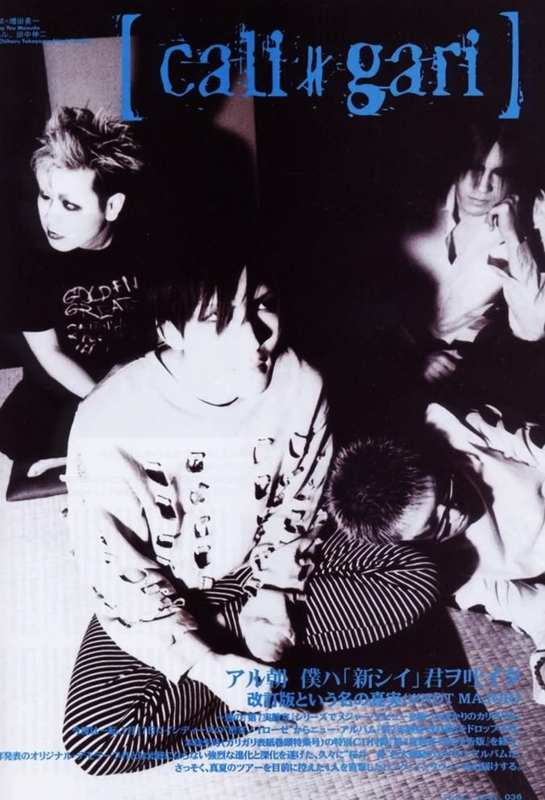
Rond de eeuwwisseling ontstond er als reactie op de gepolijste mainstream een rauwe underground tegenbeweging genaamd 'Angura Kei' (afgeleid van 'underground'). Bands zoals cali≠gari en early MUCC lieten de barokke kostuums los. In plaats daarvan droegen ze traditionele Japanse kimono's, schooluniformen of gescheurde kleding, gecombineerd met maatschappijkritische en macabere teksten. Deze stijl greep terug naar de vroege Japanse Showa-periode en bracht de rebelse punkgeest terug in de scene.
2003
De opkomst van 'Oshare Kei' en vrolijke extravaganza
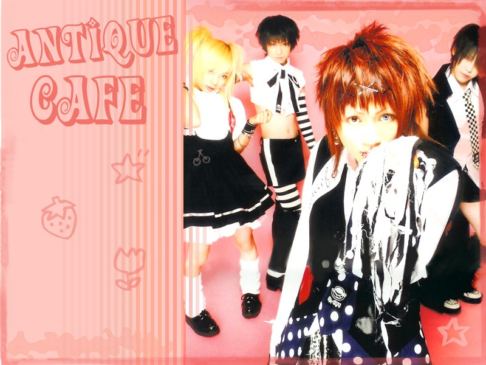
Als contrast met de duistere goth- en metalbands verscheen in 2003 de 'Oshare Kei' (modieuze stijl) substroming, aangevoerd door bands zoals Baroque en An Cafe. Deze bands ruilden de zwartlederen outfits en horror-esthetiek in voor felle neonkleuren, schattige accessoires en pop-punk muziek. De teksten waren optimistisch en gericht op vriendschap en plezier. Hierdoor trok Visual Kei een heel nieuw, jonger publiek aan dat zich aangetrokken voelde tot de kleurrijke harajuku-mode.
2004
De internationale explosie via het internet
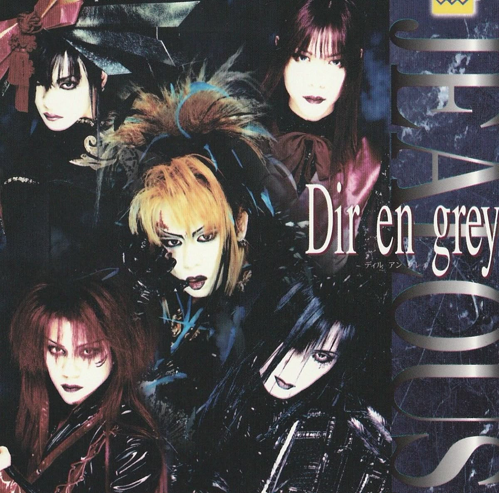
Halverwege de jaren 2000 zorgde de opkomst van internetfora, YouTube en anime-soundtracks voor een wereldwijde explosie van populariteit. Westerse fans ontdekten Visual Kei en bands zoals Dir En Grey en Nightmare (die de soundtrack voor de anime Death Note maakten) kregen een cultstatus buiten Japan. Voor het eerst in de geschiedenis begonnen Japanse Visual Kei-bands aan grootschalige tournees door Europa en Noord-Amerika, waar ze steevast voor uitverkochte zalen speelden.
2007
Reünie van X Japan en het J-Rock Revolution festival
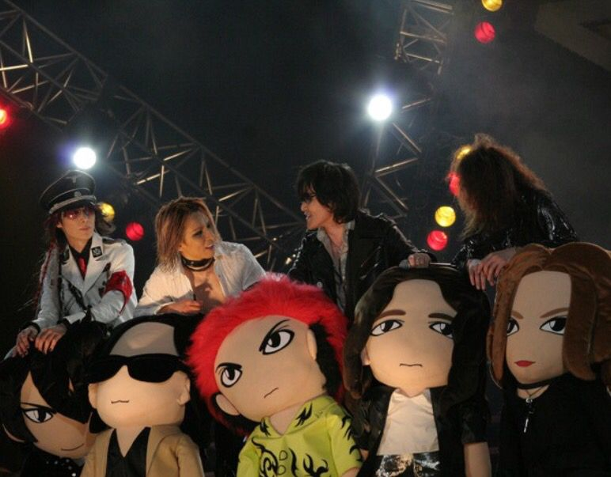
In 2007 kwamen de pioniers van X Japan na tien jaar weer bij elkaar, wat zorgde voor een enorme heropleving van de belangstelling voor het genre. Datzelfde jaar organiseerde Yoshiki het J-Rock Revolution festival in Los Angeles. Dit evenement bracht de absolute top van de nieuwe generatie Visual Kei-bands, waaronder Alice Nine en Vidoll, naar de Verenigde Staten en bewees de blijvende internationale impact van de beweging.
2008
De opkomst van de 'Neo-Visual Kei' generatie
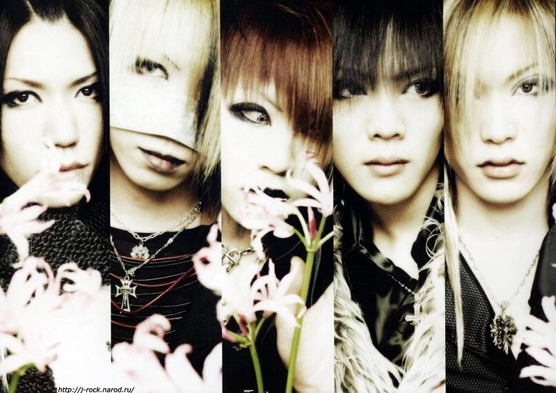
Eind jaren 2000 brak de zogenaamde 'Neo-Visual Kei' generatie definitief door naar de top van de Japanse charts. Bands zoals The Gazette, SID en Alice Nine combineerden de zware metalcore-riffing van die tijd met de theatrale visuals van de jaren 90. Met name The Gazette groeide uit tot een van de grootste acts in het genre en wist in 2010 de prestigieuze Tokyo Dome volledig uit te verkopen, een prestatie die voorheen alleen voor de allergrootste popartiesten was weggelegd.
2012
Versplintering en de 'Menhera' esthetiek
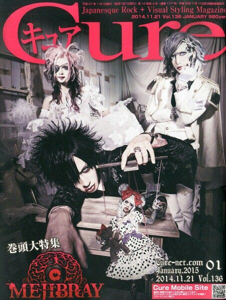
Rond 2012 verschoof de esthetiek binnen de underground scene naar een meer duistere, psychologische hoek, ook wel bekend als de 'Yami-Kawa' (ziekelijk schattige) of 'Menhera' stijl. Bands zoals Mejibray en DIAURA zochten de grenzen op met visuals die deden denken aan psychiatrische inrichtingen, medische bandages en bloed. Hoewel het genre muzikaal zwaarder en technischer werd, raakte de scene door de vele subgenres intern ook sterker versplinterd.
2015-2018
De Gokuaku-kei explosie
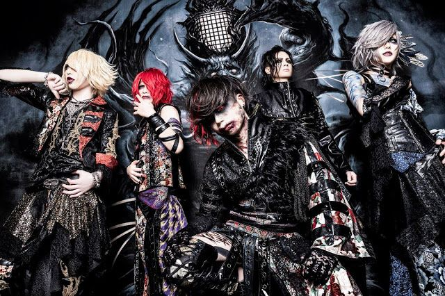
Rond 2015 bereikte de scene een breekpunt waarbij de focus verschoof van melancholische rock naar een extreem agressieve en loodzware sound. Deze periode wordt gekenmerkt door bands die elementen van deathcore, slam en brute metalcore integreerden. De visuals werden angstaanjagend, met bloederige make-up, horror-elementen en angstaanjagende contactlenzen. Het genre brak hierdoor definitief met de traditionele, melodieuze J-rock en zocht de absolute extremen op in zowel geluid als presentatie
2020
De overleving tijdens de pandemie en digitalisering
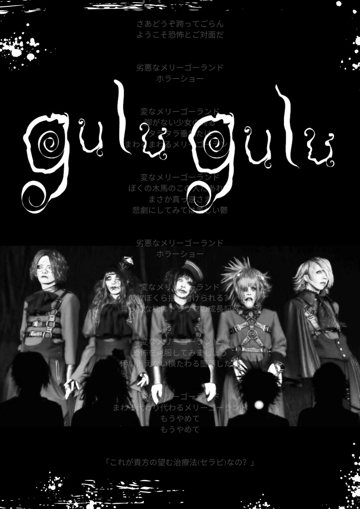
De wereldwijde coronapandemie in 2020 raakte de Visual Kei-scene, die zwaar leunt op live-interactie en merchandiseverkoop, midscheeps. Veel middelgrote bands moesten noodgedwongen stoppen. Dit dwong de scene tot een snelle digitale transformatie. Gevestigde bands stapten massaal over op high-end livestreams en online fan-meetings. Hierdoor kregen internationale fans, die voorheen moeilijk toegang hadden tot de exclusieve Japanse fanclubs, plotseling meer toegang dan ooit tevoren.
2026
De erfenis en de moderne heropleving
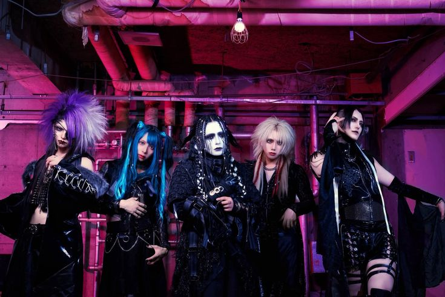
Tegenwoordig heeft Visual Kei zich ontwikkeld van een shockerende trend tot een gerespecteerd en tijdloos cultureel exportproduct van Japan. Oude pioniers treden nog altijd op, terwijl een nieuwe generatie bands het genre in leven houdt door elementen van EDM, vocaloideffecten en moderne metal te integreren. De unieke focus op androgynie, theatrale expressie en totale artistieke vrijheid blijft jonge muzikanten wereldwijd inspireren om de grenzen van mode en muziek te verleggen.